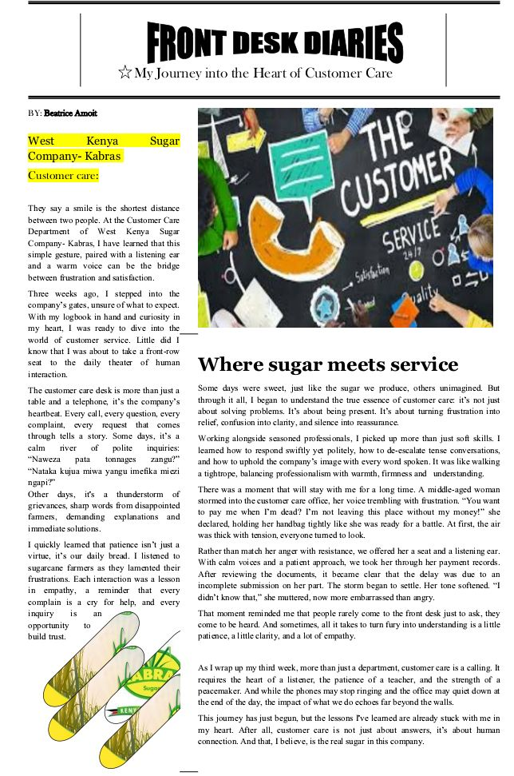

GRAPHIC DESIGN
Creative Visual Design
Creative digital graphics, including a food promotion poster designed around a clear call to action and engaging visual presentation.
MY CREATIVE PORTFOLIO
Explore selected work across graphic design, journalism, public relations, digital communication and community initiatives.
Creative digital graphics, including a food promotion poster designed around a clear call to action and engaging visual presentation.

At Kabras, I wrote an article titled Front Desk Diaries, exploring front-desk customer care, communication and organizational image.

An informative Kabras brochure created for farmer field visits and communication.

A Calguiding poster promoting participation, leadership and student engagement.

Personal storytelling through reflective and awareness-focused digital content.

Volunteering, youth engagement, environmental activities and community service.